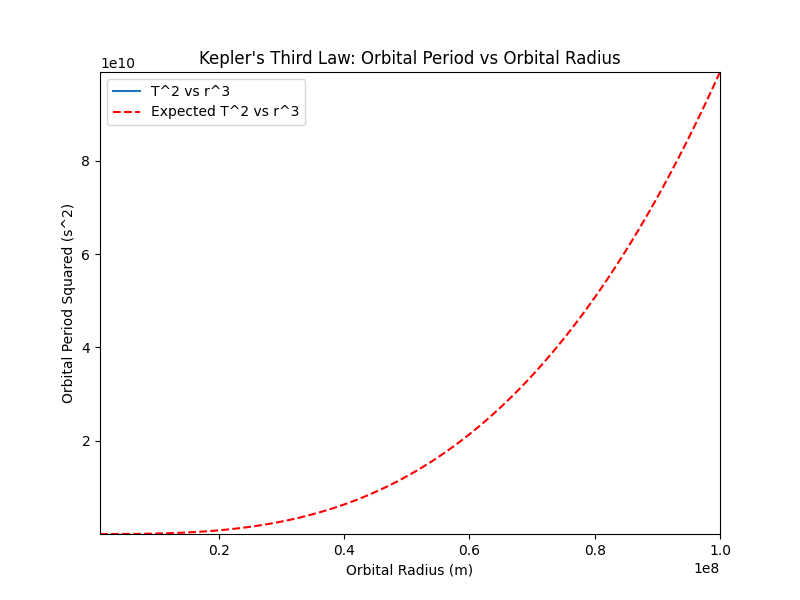

Problem 1
1. Deriving the Relationship Between Orbital Period and Orbital Radius for Circular Orbits
Starting with Newton’s Law of Gravitation
The first step in deriving the relationship is to apply Newton's law of gravitation, which tells us that the force \(F\) between two masses \(m_1\) and \(m_2\) is inversely proportional to the square of the distance \(r\) between them:
Where: - \(G\) is the gravitational constant, which has a value of:
$$ G = 6.67430 \times 10^{-11} \, \text{m}^3 \, \text{kg}^{-1} \, \text{s}^{-2} $$
- \(m_1\) is the mass of the central object (e.g., the Sun or Earth).
- \(m_2\) is the mass of the orbiting object (e.g., a planet or moon).
- \(r\) is the orbital radius, which is the distance between the two objects.
Centripetal Force
In a circular orbit, the gravitational force \(F\) that pulls the satellite or planet toward the central body is balanced by the centripetal force required to keep the object in orbit. The centripetal force is given by:
Where: - \(v\) is the orbital speed (the velocity at which the orbiting object is moving around the central body).
Equating Gravitational Force and Centripetal Force
Now, equate the two expressions for force:
Cancel the mass of the orbiting object \(m_2\) from both sides of the equation:
Now, solve for the orbital velocity \(v\):
This expression shows the orbital speed of the object based on the mass of the central object \(m_1\) and the orbital radius \(r\).
Relating Orbital Period and Orbital Speed
The orbital period \(T\) is the time it takes for the object to complete one full revolution. The orbital period is related to the orbital speed by the formula:
Substitute the expression for \(v\) into this equation:
Simplifying:
This equation is Kepler's Third Law, which states that the orbital period squared \(T^2\) is proportional to the orbital radius cubed \(r^3\):
Where: - \(T^2\) is the square of the orbital period. - \(r^3\) is the cube of the orbital radius.
2. Discussion of Kepler’s Third Law in Astronomy
Calculating Planetary Masses
By rearranging the equation \(T^2 = \frac{4 \pi^2 r^3}{G m_1}\), we can solve for \(m_1\), the mass of the central body (such as the Sun or Earth). Given the orbital period \(T\) and orbital radius \(r\), we can calculate the mass of the central body. This is useful for determining the mass of distant stars or confirming the mass of the Sun.
Determining Distances in the Solar System
Using Kepler's Third Law, if we know the orbital period of a planet or satellite, we can calculate its average orbital distance (orbital radius) from the central body. For example, we can predict the orbital radius of a planet, given its orbital period, or vice versa.
Validation of Gravitational Theories
Kepler's Third Law provides a framework to test the consistency of gravitational theories. By comparing observed orbital periods and radii, we can validate or refine our understanding of gravitational forces.
3. Real-World Examples
Let’s analyze some real-world examples to understand how Kepler’s Law applies:
Moon’s Orbit Around Earth:
- Orbital radius \(r\) ≈ 384,400 km (distance from Earth to the Moon).
- Orbital period \(T\) ≈ 27.3 days (time it takes for the Moon to complete one orbit around Earth).
Earth’s Orbit Around the Sun:
- Orbital radius \(r\) ≈ 149.6 million km (distance from Earth to the Sun).
- Orbital period \(T\) ≈ 365.25 days (time it takes for Earth to complete one orbit around the Sun).
Both of these orbits should follow Kepler’s Third Law.
4. Implementing a Computational Model
Let’s simulate circular orbits and verify the relationship \(T^2 \propto r^3\) using Python.
Python Script Explanation
Below is a Python script to simulate the relationship:
import numpy as np
import matplotlib.pyplot as plt
import matplotlib.animation as animation
# Constants
G = 6.67430e-11 # Gravitational constant in m^3 kg^-1 s^-2
M = 5.972e24 # Mass of Earth in kg
# Function to calculate orbital period (Kepler's Third Law)
def orbital_period(radius):
return 2 * np.pi * np.sqrt(radius**3 / (G * M))
# Range of orbital radii (in meters)
radii = np.linspace(1e6, 1e8, 100) # From 1,000 km to 100,000 km
# Calculate corresponding orbital periods
periods = orbital_period(radii)
# Create a figure and axis for plotting
fig, ax = plt.subplots(figsize=(8, 6))
ax.set_xlim(min(radii), max(radii))
ax.set_ylim(min(periods**2), max(periods**2))
ax.set_title("Kepler's Third Law: Orbital Period vs Orbital Radius")
ax.set_xlabel('Orbital Radius (m)')
ax.set_ylabel('Orbital Period Squared (s^2)')
line, = ax.plot([], [], label='T^2 vs r^3')
ax.plot(radii, radii**3 * (2 * np.pi)**2 / (G * M), 'r--', label='Expected T^2 vs r^3')
ax.legend()
# Initialization function: plot the background of each frame
def init():
line.set_data([], [])
return line,
# Animation function: update the data at each frame
def animate(i):
# Slice the radius and period arrays for each frame
x = radii[:i]
y = orbital_period(radii[:i])**2
line.set_data(x, y)
return line,
# Create the animation
ani = animation.FuncAnimation(fig, animate, frames=len(radii), init_func=init, blit=True, interval=30)
# Save the animation as a GIF
ani.save("kepler_orbit_animated.gif", writer="pillow")
# Show the animation (optional)
plt.show()

Visual Output of the Animation
The animation produced by the code visually represents Kepler's Third Law and how the orbital period squared (T²) relates to the orbital radius (r³). The animation evolves over time, gradually adding data points to the graph.
Key Features of the Animation:
- X-Axis (Orbital Radius, r):
- The x-axis represents the orbital radius (r), which ranges from 1,000 km (1e6 meters) to 100,000 km (1e8 meters).
-
The x-axis is dynamically scaled to fit the range of orbital radii used in the simulation.
-
Y-Axis (Orbital Period Squared, T²):
- The y-axis represents the orbital period squared (T²) in seconds squared.
-
As per Kepler's Third Law, the y-axis will display values proportional to the cube of the orbital radius.
-
Red Dashed Line (Theoretical Relationship):
- The red dashed line represents the theoretical relationship between T² and r³ as predicted by Kepler's Third Law.
- This theoretical curve is computed directly from Kepler’s formula: $$ T^2 = \frac{r^3 (2\pi)^2}{G M} $$
-
The red dashed line remains static throughout the animation, providing a reference.
-
Animated Line (Simulated Relationship):
- The animated line gradually builds up as the orbital radius increases, with the orbital period squared (T²) being calculated for each radius.
- At each frame, a new point is added to the line, progressively showing how T² and r³ are related.
-
The animated curve will match the red dashed line as the simulation progresses, demonstrating that the relationship between T² and r³ holds true.
-
Final Frame:
- By the final frame of the animation, the curve should closely match the red dashed line, visually confirming that the square of the orbital period is indeed proportional to the cube of the orbital radius.
The Final Animated Plot:
- Title: Kepler's Third Law: Orbital Period vs Orbital Radius
- X-Axis: Orbital Radius (m)
- Y-Axis: Orbital Period Squared (s²)
- Curves:
- Red Dashed Line: Theoretical relationship (Kepler’s Third Law).
- Animated Line: Simulated data based on orbital radius values.
Outcome:
The animation visually demonstrates Kepler's Third Law in action, showing how the orbital period squared (T²) increases with the cube of the orbital radius (r³). The animated plot smoothly builds as more data points are added, giving a clear and intuitive understanding of the relationship between these two variables.